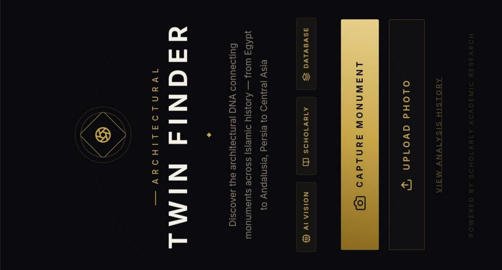
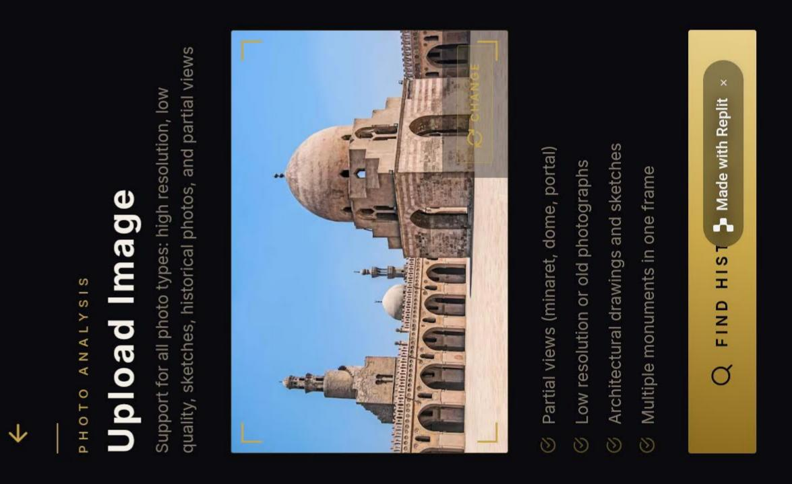
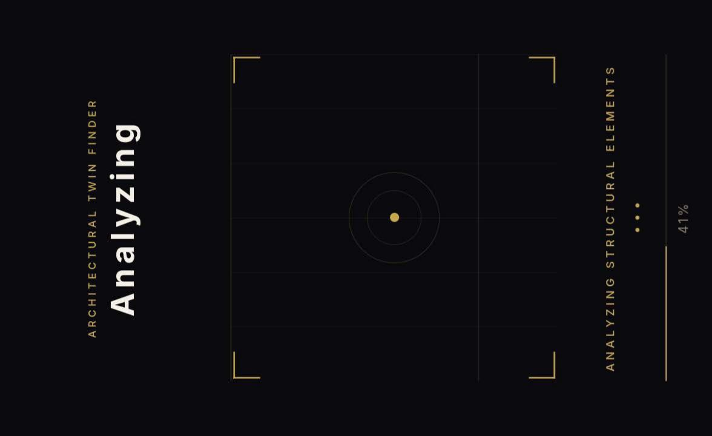
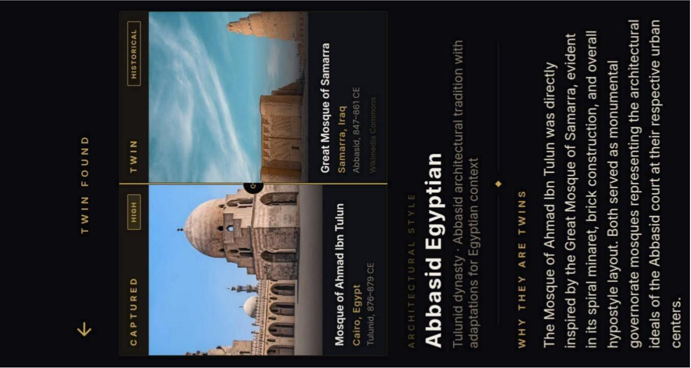

Presented at the 7th Postgraduate Studies Conference. Research focuses on the Classification and Digital Documentation of Islamic Architectural Heritage. Case Study: Mosque of Aḥmad ibn Ṭūlūn and Qalāwūn Complex. بحث مقدم في مؤتمر الدراسات العليا السابع. يركز على تصنيف والتوثيق الرقمي للتراث المعماري الإسلامي. دراسة حالة: جامع أحمد بن طولون ومجموعة قلاوون.


Designed the complete UI for a mobile application combining "Islam" and "nostalgia" — providing information about Islamic Egyptian monuments including GPS locations, Qibla direction, facility availability (washrooms, halal food), hotels, and travel packages. Also created an accompanying documentary. Supervised by two professors at SCU. صممت واجهة المستخدم الكاملة لتطبيق يجمع بين "الإسلام" و"النوستالجيا" — يوفر معلومات عن المواقع الأثرية الإسلامية في مصر تشمل المواقع الجغرافية، واتجاه القبلة، والمرافق (دورات مياه وأماكن حلال)، والفنادق وباقات السفر. وأنتجت وثائقياً مرافقاً. تحت إشراف أستاذتين من جامعة قناة السويس.
View Figma Prototypeشاهد النموذج


Managed the digital identity, product photography, and copywriting for boutique brands like Quotouf (luxury choco-dates) and Darkenz (stationery & cards), as well as content for the Islamjia project. Focusing on a "Quiet Luxury" aesthetic and engaging storytelling. إدارة الهوية الرقمية، وتصوير المنتجات، وكتابة المحتوى لعلامات تجارية مثل قطوف و Darkenz، إلى جانب محتوى مشروع إسلامجيا. مع التركيز على الجمالية الفاخرة والسرد الجذاب.




A full mobile application built on Replit that uses AI vision to identify architectural connections between Islamic monuments across history — from Egypt to Andalusia, Persia to Central Asia. Upload a monument photo and it finds its "architectural twin," showing detailed comparisons of style, materials, minarets, domes, and historical context. تطبيق موبايل كامل بُني على Replit يستخدم رؤية الذكاء الاصطناعي للكشف عن الروابط المعمارية بين المواقع الإسلامية عبر التاريخ — من مصر إلى الأندلس، ومن فارس إلى آسيا الوسطى. ارفع صورة موقع أثري ويجد له "التوأم المعماري" مع مقارنة تفصيلية.
Trained and deployed a working image classification model using Google Teachable Machine, capable of recognizing Egyptian archaeological sites from photos. A practical application of machine learning in cultural heritage preservation. دربت ونشرت نموذج تصنيف صور باستخدام Google Teachable Machine قادراً على التعرف على المواقع الأثرية المصرية من الصور — تطبيق عملي للتعلم الآلي في حفظ التراث.
Try the Live Modelجرّب النموذجA collection of produced videos: faculty promotional reels, AI-generated avatar conference teasers, voiceover-narrated heritage documentaries, and event coverage — all filmed, edited, and/or voiced personally. مجموعة فيديوهات منتجة: ريلز ترويجية للكلية، إعلانات مؤتمرات بأفاتار AI، وثائقيات تراثية بتعليق صوتي، وتغطيات فعاليات — كلها تصوير ومونتاج وصوت شخصي.
Created immersive 360° virtual tours documenting Islamic Heritage, the Faculty Museum and the historic French Quarter in Ismailia. أنشأت جولات افتراضية 360° غامرة لتوثيق التراث الإسلامي، ومتحف الكلية، والحي الفرنسي التاريخي في الإسماعيلية.